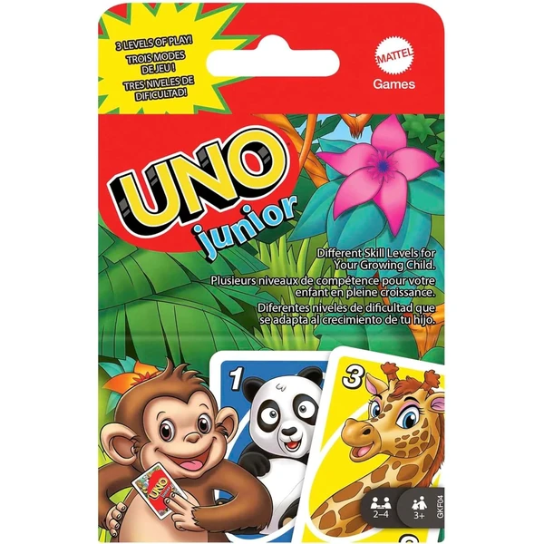
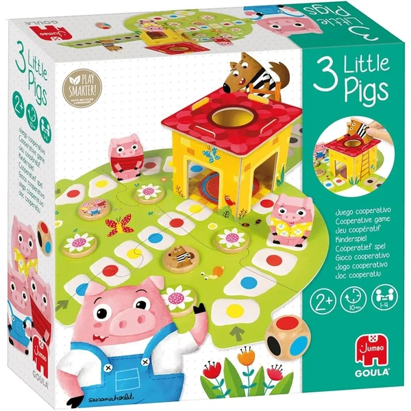
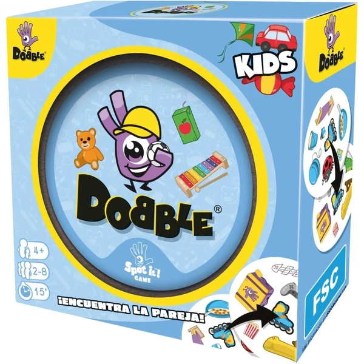
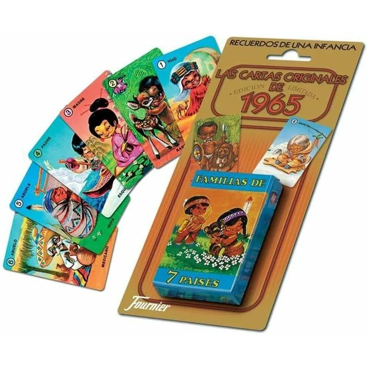
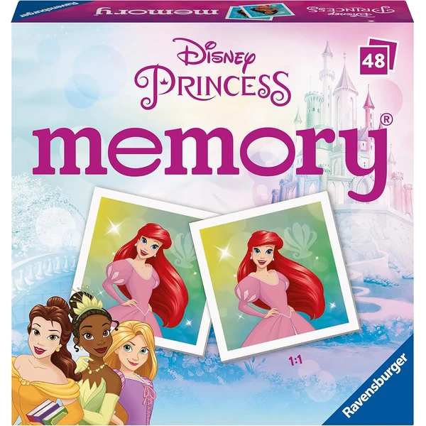
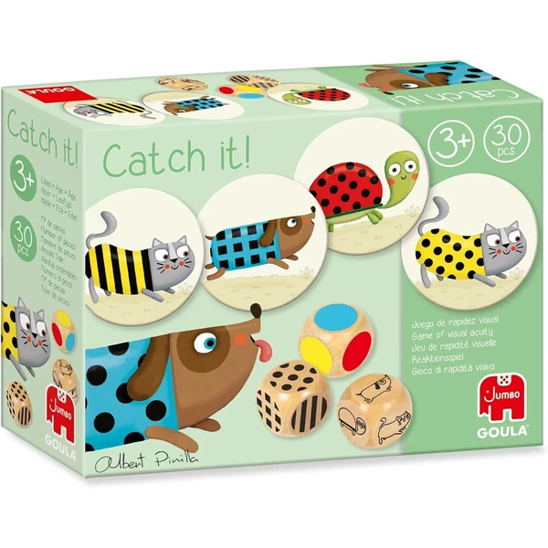

Los juegos de mesa para 3 años introducen al niño en el juego con reglas sencillas y por turnos. Existen juegos diseñados para los más pequeños —cooperativos, de colores, de memoria o de primeras asociaciones— con partidas cortas adaptadas a su atención. Aportan mucho más que diversión, porque se juegan en compañía y enseñan a esperar el turno, a ganar y a perder. En esta selección encontrarás juegos de mesa adaptados a los 3 años, perfectos para compartir en familia.
¿Qué desarrollan los juegos de mesa?
Los primeros juegos de mesa enseñan a jugar con otros mientras el niño ejercita la mente.
- Razonamiento
- Respeto de turnos
- Concentración
- Memoria
- Habilidades sociales
- Paciencia

Nene Toys Torre de Bloques 4 en 1
Una torre de bloques de madera con cuatro formas de jugar: construir con dado, adivinar con cartas de animales, hacer construcciones libres o montar una cadena de dominó. Pensada para jugar en familia.
⭐ ¿Por qué nos gusta?
- ✔ Cuatro juegos distintos en un solo set.
- ✔ Madera con pintura no tóxica, bordes redondeados.
- ✔ Fomenta motricidad fina y reconocimiento de color.
💬 Lo que más destacan las familias
Lo que más suele gustar es que da para varios tipos de juego distintos, así que no se queda anticuado en unas semanas como pasa con otros juegos de mesa. También se valora que sea fácil de sacar en cualquier reunión familiar, porque enseguida se apuntan hasta los adultos.
Ver en Amazon

UNO Junior Mattel Games
Una versión simplificada del clásico UNO con dibujos de animales en lugar de números, pensada para que los más pequeños empiecen a jugar a las cartas. Incluye tres niveles de dificultad progresiva.
⭐ ¿Por qué nos gusta?
- ✔ Cartas con animales, sin necesidad de saber números.
- ✔ Tres niveles de dificultad para ir subiendo el reto.
- ✔ De 2 a 4 jugadores, ideal para toda la familia.
💬 Lo que más destacan las familias
Muchos padres coinciden en que es la forma perfecta de introducir a los más pequeños en los juegos de cartas, sin la frustración de tener que reconocer números todavía. Los niveles de dificultad ayudan a que el juego crezca a la vez que el niño.
Ver en Amazon

Goula Los 3 Cerditos
Un juego de mesa preescolar basado en el cuento de los tres cerditos, con piezas de madera y dos modalidades: cooperativa (ayudar a los cerditos a llegar a casa) o competitiva (cada jugador es un personaje).
⭐ ¿Por qué nos gusta?
- ✔ Modo cooperativo y competitivo en un mismo juego.
- ✔ Piezas de madera de calidad, basado en un cuento clásico.
- ✔ De 1 a 4 jugadores, apto también en solitario.
💬 Lo que más destacan las familias
Los compradores valoran especialmente el modo cooperativo, porque enseña a los niños a colaborar antes de tener que lidiar con perder una partida. El cuento de fondo también ayuda a que se metan en el juego desde el principio.
Ver en Amazon

Dobble Kids
Una versión infantil del popular juego de reflejos Dobble, con cartas de animales y menos símbolos por carta para adaptarse a los más pequeños. Incluye cinco variantes de juego distintas.
⭐ ¿Por qué nos gusta?
- ✔ Cinco mini-juegos en una sola caja.
- ✔ Partidas rápidas, de unos 15 minutos.
- ✔ De 2 a 8 jugadores, ideal para grupos.
💬 Lo que más destacan las familias
Entre los comentarios más habituales aparece lo bien que funciona con niños de edades distintas jugando a la vez, incluso con los adultos metidos en la partida. Las partidas cortas evitan que se pierda el interés antes de terminar.
Ver en Amazon

Fournier Familias 7 Países
La clásica baraja de cartas infantil de familias, con el diseño original de 1965, hecha en España. Un juego sencillo pensado para reunir familias de personajes de distintos países.
⭐ ¿Por qué nos gusta?
- ✔ Juego clásico con más de 50 años de historia.
- ✔ Reglas sencillas, fácil de aprender.
- ✔ Fabricado en España.
💬 Lo que más destacan las familias
Se repite bastante el comentario de que es una alegría poder compartir con los hijos el mismo juego con el que jugaban de pequeños. Las reglas sencillas hacen que los niños cojan el truco enseguida y pidan repetir partida.
Ver en Amazon

Ravensburger Mini Memory Princesas Disney
Un juego de memoria con 48 cartas ilustradas con las princesas Disney, pensado para estimular la memoria visual y la concentración desde los 3 años. Reglas sencillas: encontrar las parejas iguales.
⭐ ¿Por qué nos gusta?
- ✔ Ilustraciones de princesas Disney muy atractivas.
- ✔ Estimula memoria visual y concentración.
- ✔ De 2 a 6 jugadores, formato compacto.
💬 Lo que más destacan las familias
No es raro encontrar comentarios sobre lo entretenidas que resultan las ilustraciones de las princesas a la hora de buscar las parejas, algo que mantiene la atención de las niñas más tiempo del esperado. El formato compacto también gusta para llevarlo de viaje.
Ver en Amazon

Goula Catch It!
Un juego de agilidad visual y reflejos donde se lanzan dados para encontrar la combinación correcta de animal, vestido y color en las fichas de la mesa. Disponible con dos o tres dados para ajustar la dificultad.
⭐ ¿Por qué nos gusta?
- ✔ Desarrolla agilidad visual y rapidez de reflejos.
- ✔ Dificultad ajustable: dos o tres dados.
- ✔ Partidas rápidas y dinámicas, muy entretenidas.
💬 Lo que más destacan las familias
Quienes lo han probado destacan lo rápido que engancha, porque cada ronda exige estar atento para encontrar la combinación antes que los demás. La posibilidad de ajustar la dificultad con los dados hace que siga siendo un reto según van creciendo.
Ver en Amazon